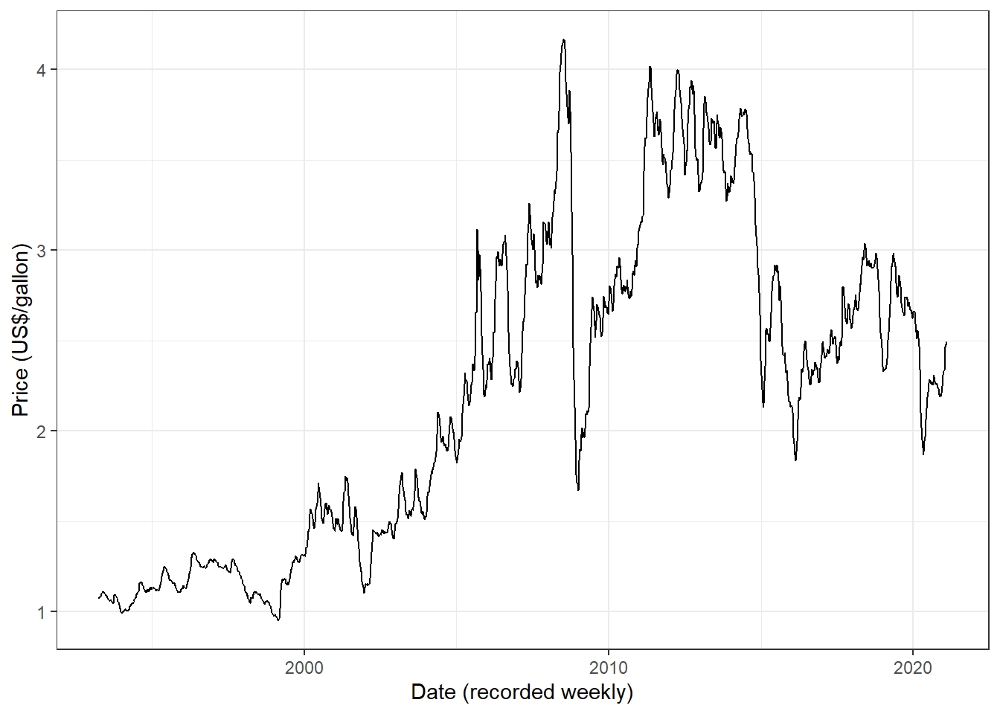
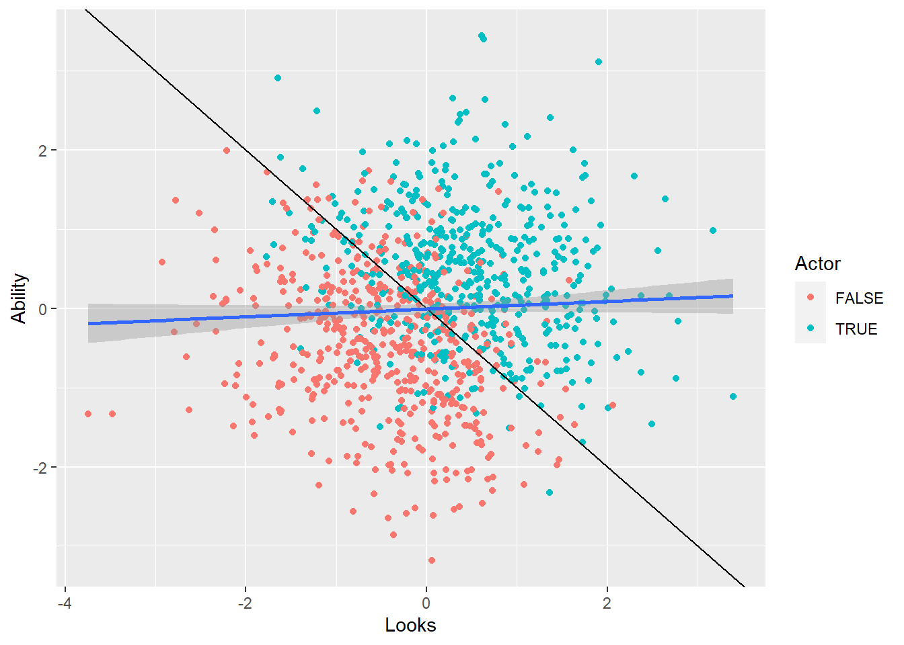
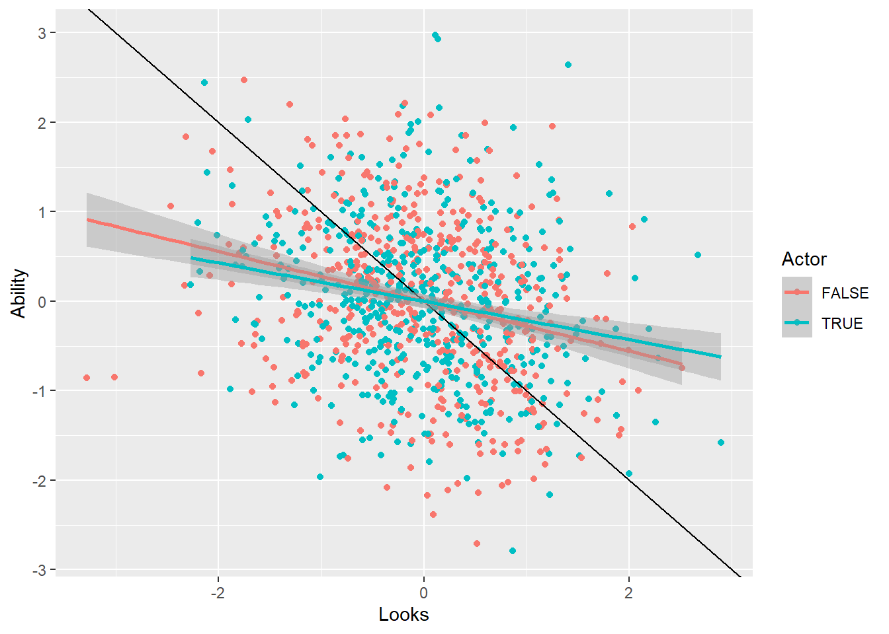
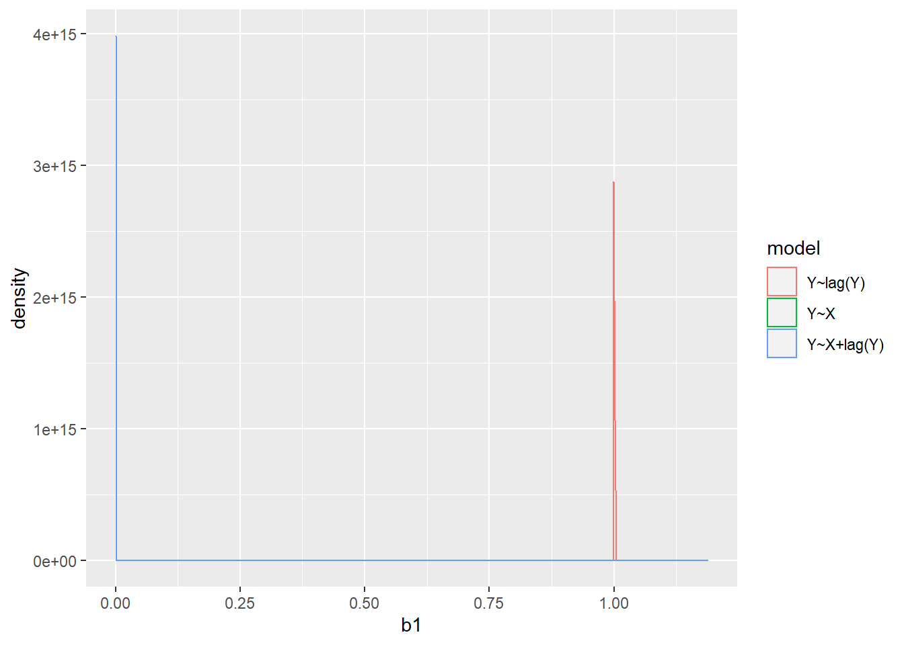
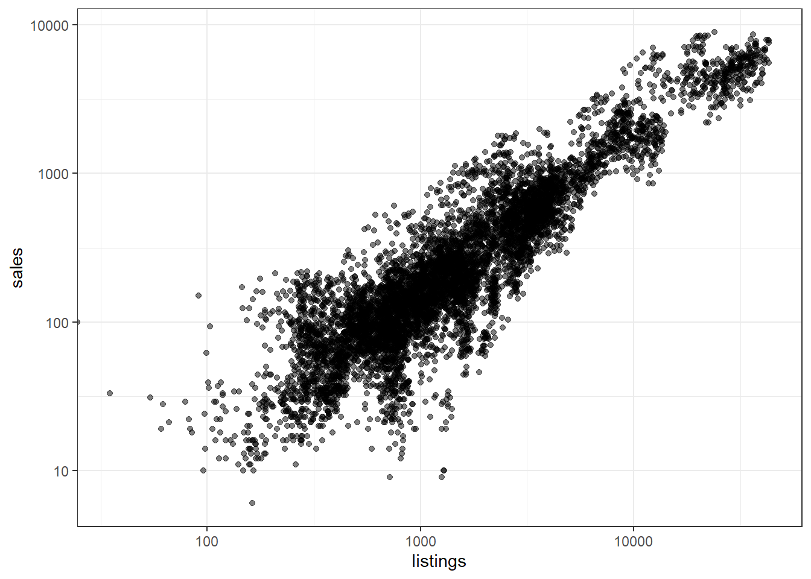

3 Time series, prediction, and forecasting
For most of this section, we will draw from material in Bailey’s Real Econometrics, Chapter 14 of my supplementary material, and:
Hyndman, R.J., & Athanasopoulos, G. (2018) Forecasting: principles and practice, 2nd edition, OTexts: Melbourne, Australia.
3.1 Introduction
Up to this point we have almost exclusively focused on estimating causal effects. While we will by no means ignore this altogether in this section, we will also have an added focus on prediction and forecasting. That is, since we have data on more than one time period, it is natural that we may want to make a prediction about something that happens after our sample is collected. As a motivating example, consider the following data on time series from the US Energy Information Administration website
library(tidyr)
library(dplyr)
library(ggplot2)
library(lubridate)
D<-(read.csv("Data/Weekly_Retail_Gasoline_and_Diesel_Prices.csv",skip=6)
%>% data.frame()
)
colnames(D)<-c("Week","Price")
D<-D %>% mutate(Week = mdy(Week)) %>% arrange(Week) %>% mutate(Month=month(Week))
Dts<-ts(D,start=1995,frequency=52)
knitr::kable(head(D))| Week | Price | Month |
|---|---|---|
| 1993-04-05 | 1.068 | 4 |
| 1993-04-12 | 1.079 | 4 |
| 1993-04-19 | 1.079 | 4 |
| 1993-04-26 | 1.086 | 4 |
| 1993-05-03 | 1.086 | 5 |
| 1993-05-10 | 1.097 | 5 |
(
ggplot(D,aes(x=Week,y=Price))
+geom_line()
+xlab("Date (recorded weekly)")+ylab("Price (US$/gallon)")
+theme_bw()
)
3.2 Notation
\[ Y_t = \text{our outcome variable measured in time period }t \] \[ Y_{t-1} = Y \text{ from one time period ago (1-period lag)} \] E.g. in linear regression: \[ \begin{aligned} Y_t&= \beta_0+\beta_1Y_{t-1}+\epsilon_t\\ E[Y_t\mid Y_{t-1}]&=\beta_0+\beta_1Y_{t-1} \end{aligned} \]
\[ Y_{t+1}=Y \text{ one time period into the future (1-period forward or lead)} \]
3.3 Building blocks
Autoregrssive model
\[ Y_t=\beta_0+\sum_{l=1}^L\beta_lY_{t-l}+\epsilon_t\quad\text{AR(L)} \]
e.g.: If \(\beta_l=\frac1L\) (and \(\beta_0=0\)), then this is a moving-average forecast.
Moving average model \[ Y_t=\beta_0+\sum_{l=1}^L\gamma_l\epsilon_{t-l}+\epsilon_t \quad\text{MA(L)} \] Autorgresive moving average model \[ Y_t=\beta_0+\sum_{l=1}^{L_1}\beta_lY_{t-l}+\sum_{l=1}^{L_2}\gamma_l\epsilon_{t-l}+\epsilon_t\quad \text{ARMA}(L_1,L_2) \]
3.4 Diagnostics
3.4.1 ACF and PACF
Autocorrelation function \[ R(\tau)=\frac{E[(Y_t-\mu)(Y_{t-\tau}-\mu)]}{V(Y_t)} \]
For an AR process: \[ \begin{align} Y_t&=\beta_0+\sum_{l=1}^L\beta_lY_{t-l}+\epsilon_t \end{align} \]
- Assume stationarity - \(E(Y_t)\) does not depend on \(t\) \[ \begin{align} E[Y_t]&=E\left[\beta_0+\sum_{l=1}^L\beta_lY_{t-l}+\epsilon_t\right]\\ &=\beta_0+\sum_{l=1}^L\beta_lE[Y_{t-l}]+E[\epsilon_t]\\ &=\beta_0+\sum_{l=1}^L\beta_lE[Y_{t}]+\underbrace{E[\epsilon_t]}_{=0}\quad\text{imposed stationarity here}\\ &=\beta_0+E[Y_{t}]\sum_{l=1}^L\beta_l\\ E[Y_t]\left(1-\sum_{l=1}^L\beta_l\right)&=\beta_0\\ E[Y_t]&=\frac{\beta_0}{1-\sum_{l=1}^L\beta_l} \end{align} \] Simplifying for AR(1): \[ E[Y_{t}]=\frac{\beta_0}{1-\beta_1} \] Problem if \(|\beta_1|\geq 1\): E.g.:
\[ \begin{align} Y_t&=\beta_1Y_{t-1}+\epsilon_t\quad |\beta_1|>1\\ E[Y_{t}\mid Y_{t-1}]&=\beta_1Y_{t-1}\\ E[E[Y_{t}\mid Y_{t-1}]]&=E[\beta_1Y_{t-1}]\\ E[Y_t]&=\beta_1E[Y_{t-1}] \end{align} \]
- Calculate covariance (assume \(\beta_0=0\implies \mu=0\))
\[ \begin{aligned} E[(Y_t-\mu)(Y_{t-\tau}-\mu)]&=E[Y_tY_{t-\tau}]\\ &=E\left[\left(\sum_{l=1}^L\beta_lY_{t-l}+\epsilon_t\right)Y_{t-\tau}\right]\\ &=E\left[Y_{t-\tau}\sum_{l=1}^L\beta_lY_{t-l}+Y_{t-\tau}\epsilon_t\right]\\ &=\sum_{l=1}^L\beta_lE[Y_{t-\tau}Y_{t-l}]+\underbrace{E[Y_{t-\tau}\epsilon_t]}_{=0}\\ &=\sum_{l=1}^L\beta_lE[Y_{t-\tau}Y_{t-l}]\\ &=\sum_{l=1}^L\beta_l\mathrm{cov}(Y_{t-\tau},Y_{t-l}) \end{aligned} \] \[ \begin{align} Y_0&=y_0\quad\text{(given)}\\ Y_1&=\beta_1y_0+\epsilon_1\\ Y_2&=\beta_1(\beta_1y_0+\epsilon_1)+\epsilon_2\\ Y_3&=\beta_1\overbrace{(\beta_1\underbrace{(\beta_1y_0+\epsilon_1)}_{Y_1}+\epsilon_2)}^{Y_2}+\epsilon_3\\ Y_t&=y_0\beta_1^t+ \sum_{l=0}^{t}\beta_1^{l}\epsilon_{t-l} \end{align} \]
3.6 A brief digression into collider bias
Model: Actors must be at least one of (1) good looking, and (2) a good actor.
Ability<-rnorm(1000)
Looks<-rnorm(1000)
Actor = (Ability+Looks)>rnorm(1000)
d<-data.frame(Ability,Looks,Actor)
ggplot()+geom_point(data=d,aes(x=Looks,Ability,color=Actor))+geom_abline(slope=-1,intercept=0)+geom_smooth(data=d,aes(x=Looks,Ability),method="lm")
m1<-lm(data=d,Ability~Looks)
m2<-lm(data=d,Ability~Looks+Actor)
stargazer(m1,m2,type="text")##
## ================================================================
## Dependent variable:
## --------------------------------------------
## Ability
## (1) (2)
## ----------------------------------------------------------------
## Looks 0.049 -0.247***
## (0.032) (0.032)
##
## Actor 1.182***
## (0.062)
##
## Constant -0.008 -0.590***
## (0.032) (0.041)
##
## ----------------------------------------------------------------
## Observations 1,000 1,000
## R2 0.002 0.266
## Adjusted R2 0.001 0.264
## Residual Std. Error 1.004 (df = 998) 0.862 (df = 997)
## F Statistic 2.239 (df = 1; 998) 180.498*** (df = 2; 997)
## ================================================================
## Note: *p<0.1; **p<0.05; ***p<0.01d_dm<-d %>% group_by(Actor) %>% mutate(Looks = Looks-mean(Looks),Ability = Ability-mean(Ability))
ggplot(d_dm,aes(x=Looks,Ability,color=Actor))+geom_point()+geom_abline(slope=-1,intercept=0)+geom_smooth(method="lm")
\[\begin{aligned} \text{Ability} &\xrightarrow[]{}\text{Actor}\\ \text{Looks} &\xrightarrow[]{}\text{Actor}\\ &\quad\text{we want to estimate:}\\ \text{Ability}&\xrightarrow[]{}\text{Looks} \end{aligned} \]
If \(Y_{t-1}\) shouldn’t be on the RHS
Real model \[ Y_t=\beta_1X_t+\epsilon_t, \quad X_t=\rho X_{t-1}+\nu_t \] Estimated model: \[ y_t=\gamma Y_{t-1}+\beta_1X_t+\epsilon_t \]
\[\begin{aligned} X_t &\xrightarrow[]{}Y_t\\ X_{t-1} &\xrightarrow[]{}X_t\\ X_{t}&\xrightarrow[]{}X_{t+1}\xrightarrow[]{}Y_{t+1}\\ &\quad\text{we want to estimate:}\\ Y_{t-1}\xleftarrow[]{}X_{t-1}\xrightarrow[]{}X_{t} \end{aligned} \]
FakeData<-function(b,g) {
E<-0.1*rnorm(100)
X<-0
for (tt in 2:length(E)) {
X[tt]<-g*X[tt-1]+0.1*rnorm(1)
}
t<-1:length(X)
Y<-b*X+E
data.frame(X,Y,t)
}
Estimates<-function(b,g){
data<-FakeData(b,g)
model1<-lm(data,formula = Y ~ X)
model2<-lm(data,formula = Y ~ X+lag(Y,1))
model3<-lm(data,formula = Y ~ lag(Y,1))
c(model1$coefficients["X"],model2$coefficients["X"],model3$coefficients["lag(Y, 1)"])
}
Simulation<-data.frame()
for (ss in 1:1000) {
Simulation<- data.frame(Estimates(1,0.9),c("Y~X","Y~X+lag(Y)","Y~lag(Y)")) %>% data.frame( ) %>% rbind(Simulation)
}
colnames(Simulation)<-c("b1","model")(ggplot(Simulation,aes(x=b1,color=model)))+geom_density()
Simulation %>% group_by(model) %>% summarize(mean = mean(b1),
sdSimulation = sd(b1)/sqrt(n())) %>% knitr::kable()| model | mean | sdSimulation |
|---|---|---|
| Y~lag(Y) | 1.0000000 | 0.000000 |
| Y~X | 0.9981951 | 0.001724 |
| Y~X+lag(Y) | 0.0000000 | 0.000000 |
Real data:
# Documentation here: https://vincentarelbundock.github.io/Rdatasets/doc/ggplot2/txhousing.html
Sales<-read.csv("https://vincentarelbundock.github.io/Rdatasets/csv/ggplot2/txhousing.csv")
head(Sales) %>% knitr::kable()| X | city | year | month | sales | volume | median | listings | inventory | date |
|---|---|---|---|---|---|---|---|---|---|
| 1 | Abilene | 2000 | 1 | 72 | 5380000 | 71400 | 701 | 6.3 | 2000.000 |
| 2 | Abilene | 2000 | 2 | 98 | 6505000 | 58700 | 746 | 6.6 | 2000.083 |
| 3 | Abilene | 2000 | 3 | 130 | 9285000 | 58100 | 784 | 6.8 | 2000.167 |
| 4 | Abilene | 2000 | 4 | 98 | 9730000 | 68600 | 785 | 6.9 | 2000.250 |
| 5 | Abilene | 2000 | 5 | 141 | 10590000 | 67300 | 794 | 6.8 | 2000.333 |
| 6 | Abilene | 2000 | 6 | 156 | 13910000 | 66900 | 780 | 6.6 | 2000.417 |
(ggplot(Sales,aes(x=date,y=volume,group=city))+geom_line()+theme_bw())+scale_y_continuous(trans="log10")
(ggplot(Sales,aes(y=sales,x=listings)))+geom_jitter(alpha=0.5)+theme_bw()+scale_x_continuous(trans="log10")+scale_y_continuous(trans="log10")